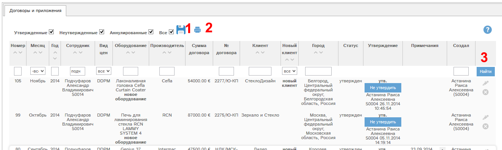
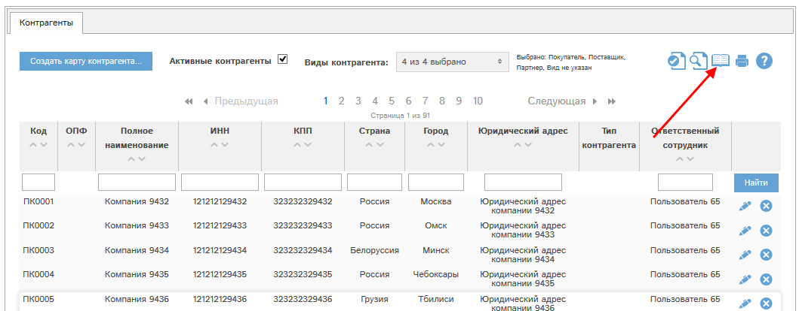
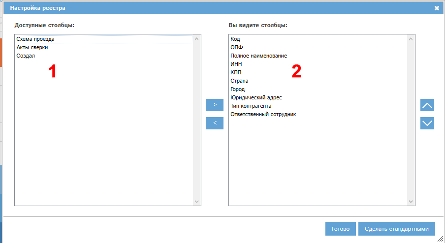

При наличии у Вас соответствующих прав Вам доступен раздел «Договоры и приложения».
По умолчанию в этом разделе показан список ваших договоров.
Если у Вас есть специальные права, то Вы имеете доступ к данным других отделов и сотрудников. Кроме того, договора и приложения определенного сотрудника можно посмотреть, нажав кнопку  - просмотреть договора в колонке факта продаж за интересующий месяц интересующего года.
- просмотреть договора в колонке факта продаж за интересующий месяц интересующего года.

Рис. Раздел "Договора и приложения".
Фильтр статусов (1) позволяет отфильтровать список договоров по статусам:
Можно выделить несколько статусов, например: договора только в статусах утвержден, не утвержден.
Нажатие кнопки позволяет запомнить в программе выбранные вами статусы, и когда вы снова зайдете в раздел «Договора и приложения», то будут показаны документы по сохраненному ранее набору статусов.
Для фильтрации договоров по статусу необходимо отметить требуемые статусы и нажать кнопку «Найти» (3).
Кроме того, в списке можно искать договора и сортировать список по полям:
Кнопка (2) позволяет распечатать показанный список договоров и приложений.
С помощью кнопки у конкретного договора можно просмотреть или отредактировать договор.
С помощью кнопки можно аннулировать договор.
Если кнопка серого цвета - , то аннулировать данный договор невозможно. Это может быть по нескольким причинам:
В этих случаях при нажатии кнопки программа выдаст сообщение с перечислением причин, по которым невозможно аннулировать договор.
Все основные реестры программы могут быть индивидуально сконфигурированы: вы можете указать, какие колонки и в какой последовательности вы желаете видеть. Всегда можно вернуться к стандартному виду реестра. Рассмотрим работу этой функции на примере реестра контрагентов.
Для настройки реестра нажмите кнопку :

Откроется окно настройки. Слева указаны доступные колонки (1), справа - колонки, которые показаны в реестре (2):

Для перемещения столбцов между блоками 1 и 2 выделите требуемые столбцы (можно выделить несколько столбцов, нажав и удерживая ctrl при их выделении), и нажмите кнопку > для перемещения столбцов из доступных в видимые, либо кнопку < для перемещения из видимых в доступные столбцы.
Доступна сортировка видимых столбцов (в блоке 2). Для того, чтобы поднять или опустить столбец или их группу, выделите требуемые столбцы и нажмите для подъема или для спуска столбца.
Для того, чтобы сохранить внесенные изменения, нажмите Готово. Реестр обновится, и будут показаны выбранные вами столбцы в выбранной вами последовательности.
Для того, чтобы восстановить стандартный вид реестра, нажмите кнопку "Сделать стандартными".